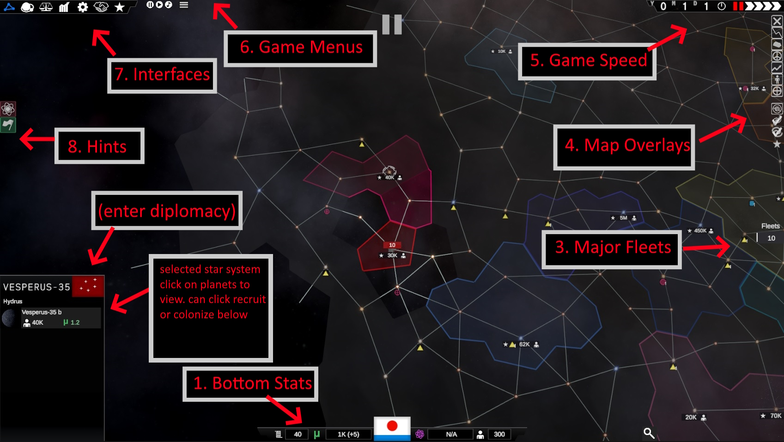
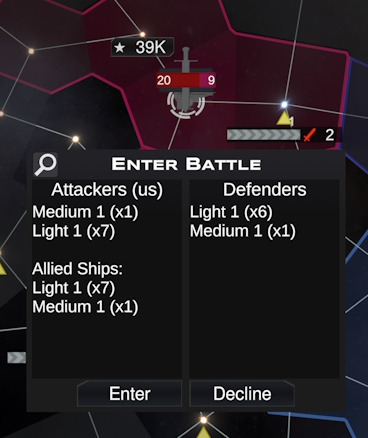

Note: tutorial images are from various versions of the game and may be slightly different from the current version
Quick Guide
You start at year 0 (after Earth) and the game ends on year 100. If you have the highest rank (which can be viewed in the diplomacy tab and combines military economic and technology scores) at the end of the game, you win the game. If you conquer every star system before then, you also win the game.
The Map
If you are ever unsure of what a certain button or number represents, simply hold your mouse over it and a tooltip will appear. You can set this tooltip to be instant or delayed in the pause menu Settings tab.
- Bottom Stats - Shows your basic resources: your executive power, money, research, and manpower
- Fleet Selection - Shows selected fleets. You can click on smaller fleets on the right side to select on in the center. You can click on ships in the center to split or delete them. You can click on the button with two arrows to transfer ships between fleets
- Major Fleets - Click to zoom to any of your major fleets.
- Map Overlays - Shows information about star systems graphically on the map
- Game Speed - Shows the current date and how fast the game is playing
- Game Menus - The main menu and music player menu
- Interfaces - Interfaces that let you see other information. Hover over each button to see what they do. They can be accessed via the F1,F2,F3... keys
- Hints - Shows important things that you might be forgetting to do, left click on a hint to go to the relevant action and right click to dismiss the hint
- Selected Star System - The star system you clicked on. If this star system belongs to a foreign government, you can click on their flag to enter negotiations with them. It will show any planets that you can build mines or colonies on, and you can click on them to view and interact with them. If you click on "Recruit" (if it's a star system owned by you and with a mine or colony) you can recruit ships from this star system. Alternatively, if it's an adjacent unoccupied star system, you can click "Colonize" to begin colonizing it.
You can left click on star systems directly, which will also select your fleets present there.
You can also left click on your own fleets and right click to send them anywhere. You can shift+right click to add to a fleet's existing path. You can press backspace to stop fleets from moving, but once they have started moving they will lock into their current movement.
You can also hold down the left mouse and drag a box over fleets to select all of them, or hold shift+left click to select multiple fleets one at a time.
You can press "G" to group together all selected fleets that are in the same system and not moving.
Basic Mechanics
You have four resources at your disposal, indicated at the bottom of the user interface.- Money - Money is used to maintain fleets and build and upgrade planetary colonies and mines.
- Executive Power - Executive Power increases every month and can be used to instantly perform actions that otherwise take time. Governments that are more centralized will gain more executive power.
- Research - Research accumulates and allows you to unlock technologies. Switching your research will cause you to lose all of your current progress.
- Manpower - Manpower allows you to recruit and repair ships. You gain it based on the size of your population. Ships cost half as much to repair as they do to recruit.
Mechanics
Government
Your government is defined by its Centralization (vertical axis) and Populism (horizontal axis). Higher centralization (meaning going upwards on the chart) will increase your executive power but also increase the penalty to your size, because decisionmaking will be more centralized. Higher populism (going rightwards on the chart) will also change your government type. Every government type has a special bonus. Every few years (default of 10 without effects or technologies) you can reform your government to change its position on the chart.
Fleets
Every ship has a "weight", which is generally 1 for light ships, 3 for medium ships, and 10 for heavy ships. The sum of these weights is the weight of your Fleet, and you are limited to a Maximum Fleet Weight which determines the size of fleets as well as how many ships you can bring into a battle.
Monopolies
When you build mines, they will start producing rare resources like Dual Matter, Tantalum, Iridium, and Artifacts. If you gain a monopoly over these resources (defined as having at least 35% of galactic production), you will gain powerful effects.
Terraforming
Terraforming a planet to make it more hospitable is a difficult and step-by-step process. You must increase the Atmosphere, Temperature and Radiation scores. You cannot change the Gravity score of your planet however.
Diplomatic Reputation
Your diplomatic reputation can be seen in the Diplomacy tab. If it goes below 10, everyone will declare war on you. Declaring wars decreases your reputation, but it will slowly move back to a resting point.
Battle
When your fleet runs into an enemy fleet (unless either one is retreating), the game will pause and you will be prompted to enter the battle. If you accept, you will fight the battle directly, if you decline the battle will resolve on its own. You will not be prompted to enter very small battles (involving only 1-2 ships on one side).
Before the battle begins, you can choose how to group your ships into units. You can do this by setting the number of light, medium, and heavy ship groups you want. Making more groups will give you more control but also make the battle more tedious and complicated.
When you start the battle, you can see your battle units by their icons floating above the ships. A triangle represents a light ship unit, a square represents a medium ship unit, and a pentagon represents a heavy ship unit.
To select a unit, click on its icon, click on a ship belonging to that unit, or drag a box over it. Shift+clicking will select multiple units. Right click to send a unit to a position, and shift+right click to send it on a path with multiple waypoints. Backspace to stop movement.
Once the battle is over, the surviving ships that were able to retreat will retreat from the site of the battle. This retreating fleet will go back to its country's capitol or the nearest unoccupied star system.
Fleets in uncontrolled territory will suffer small amounts of attrition, and fleets in friendly territory will slowly repair, assuming you have the manpower to repair them.
Battle Mechanics
Retreating
After 60 seconds of battle, you can retreat your selected units by pressing "R" by default.
Dual Space
Certain ships (mostly Light ones) can enter into Dual Space temporarily, allowing them to evade enemy attacks but not make attacks of their own. Click on the dual space button or press "T" by default to do this.
Targeting
By default Heavy ships will target the largest enemy ship, Medium ships will target the closest, and light ships the weakest. You can select this manually.